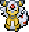

#181 電龍Ampharos
- 地區
- 城都
- 分類
- 一般
- 特性
- 靜電
- 身高／體重
- 1.4 公尺／61.5 公斤
- 性別
- ♀ 50% · ♂ 50%
- 捕獲率
- 45
- 基礎經驗值
- 194
- 成長速度
- 較慢
「牠尾巴上的亮光，從很遠的地方就看得到。」
能力
| 能力 | 種族值 | Lv 100 | Lv 150 | |
|---|---|---|---|---|
| HP | 90 | 870-963 | 1290-1428 | |
| 攻擊 | 75 | 155-186 | 230-276 | |
| 防禦 | 75 | 155-186 | 230-276 | |
| 特攻 | 115 | 235-266 | 350-396 | |
| 特防 | 90 | 185-216 | 275-321 | |
| 速度 | 55 | 115-146 | 170-216 | |
| 合計 | 500 |
Lv 欄是個體值 0–31 的能力範圍（沒有努力值，性格補正為中性）。遊戲內 HP 會再乘以 3，避免即時戰鬥太快結束。升到 Lv 100 所需經驗值合計： 1,059,860，Lv 150： 4,394,235。
進化
 咩利羊
咩利羊 茸茸羊
茸茸羊超級進化

超級電龍
- 特性
- 破格
- 身高／體重
- 1.4 公尺／61.5 公斤
| 能力 | 種族值 | 普通形態 |
|---|---|---|
| HP | 90 | 90 |
| 攻擊 | 95 | 75 |
| 防禦 | 105 | 75 |
| 特攻 | 165 | 115 |
| 特防 | 110 | 90 |
| 速度 | 45 | 55 |
| 合計 | 610 | 500 |
需要：電龍達到最高等級（Lv 150）+ 10 電龍進化石 在背包裡。從背包對電龍使用這顆石頭；石頭會全部用完，形態永久改變。
等級、個體值、招式、異色、攜帶道具與初訓家都維持不變。這個形態的能力、屬性與特性在所有模式（玩家對戰、最後存活、寶可夢戰爭、世界頭目）都會套用。
出現地點與機率
| 地圖 | 時間 | 場所 | 等級 | 機率 |
|---|---|---|---|---|
| 聯盟道路 | 白天 | 陸地 | 121-125 | 14.7% |
| 日光田野 | 白天 | 陸地 | 91-95 | 16.1% |
| 微風草地 | 白天 | 陸地 | 90-94 | 16.1% |
| 龍之道路 | 白天 | 陸地 | 116-119 | 27.3% |
| 海岸道路 1 | 白天 | 陸地 | 111-114 | 15.9% |
百分比是該地圖、該時段每次生成野生寶可夢時，抽到這一隻的機率。
在下雨、打雷時更容易遇到（×1.5）。
升級招式
招式光碟（對應招式學習器）
官方招式學習器對應列表：
| 招式 | 屬性 | 分類 | 威力 | 光碟 |
|---|---|---|---|---|
| 迷人 | 一般 | 變化 | - |  一般・少見 一般・少見 |
| 劈瓦 | 格鬥 | 物理 | 75 |  格鬥・稀有 格鬥・稀有 |
| 影子分身 | 一般 | 變化 | - | 一般・少見 |
| 硬撐 | 一般 | 物理 | 70 | 一般・稀有 |
| 閃光 | 一般 | 變化 | - | 一般・少見 |
| 真氣拳 | 格鬥 | 物理 | 150 | 格鬥・超稀有 |
| 遷怒 | 一般 | 物理 | 60 | 一般・少見 |
| 覺醒力量 | 一般 | 物理 | 60 | 一般・少見 |
| 破壞光線 | 一般 | 物理 | 150 | 一般・超稀有 |
| 鐵尾 | 鋼 | 物理 | 100 |  鋼・極稀有 鋼・極稀有 |
| 光牆 | 超能力 | 變化 | - |  精神強念・少見 精神強念・少見 |
| 守住 | 一般 | 變化 | - | 一般・少見 |
| 求雨 | 水 | 變化 | - |  水面・少見 水面・少見 |
| 睡覺 | 超能力 | 變化 | - | 精神強念・少見 |
| 報恩 | 一般 | 物理 | 60 | 一般・少見 |
| 碎岩 | 格鬥 | 物理 | 20 | 格鬥・少見 |
| 秘密之力 | 一般 | 物理 | 70 | 一般・稀有 |
| 電擊波 | 電 | 特殊 | 60 |  電・少見 電・少見 |
| 怪力 | 一般 | 物理 | 80 | 一般・稀有 |
| 打雷 | 電 | 特殊 | 120 | 電・超稀有 |
| 十萬伏特 | 電 | 特殊 | 95 | 電・極稀有 |
| 劇毒 | 毒 | 變化 | - |  毒・少見 毒・少見 |
同屬性招式（電），不在官方列表中：
上表所有升級招式，以及所有一般屬性光碟都可以學習；招牌招式、傳說招式與鎖定招式除外（參見 招式光碟）。光碟只會由野生寶可夢掉落。
打倒後掉落
 電力增幅器
電力增幅器 粗寶石
粗寶石另外還有依野生寶可夢等級發放的通用掉落（藥品、球等）： 等級掉落表。實際機率會隨等級差、稀有狀態與每日上限改變。
異色
異色機率 1/1024 ，每次野生寶可夢出現時判定（共 10 種配色）。異色寶可夢每一項個體值至少為 20，且全部能力 +5%。